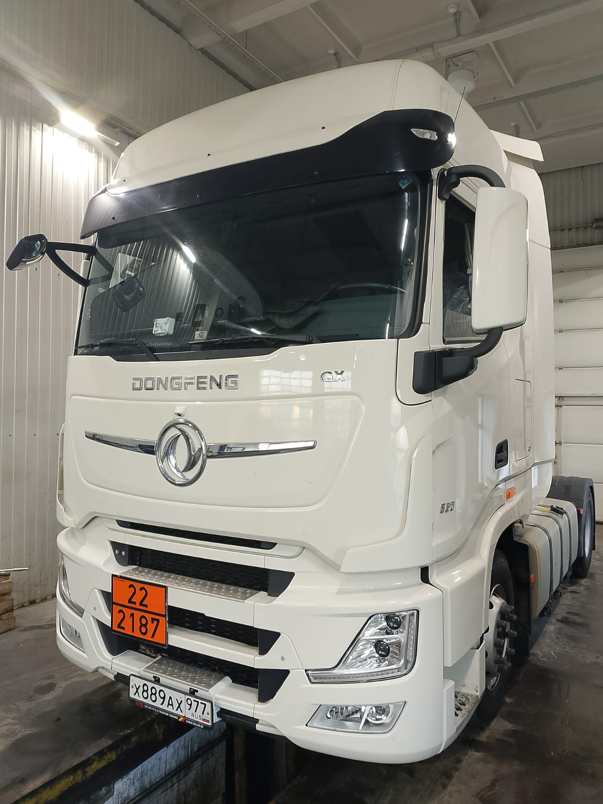
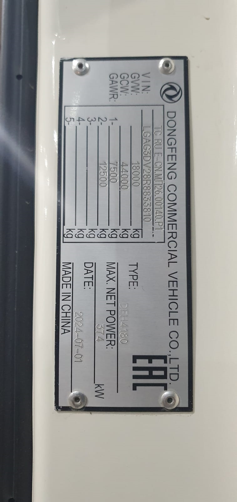
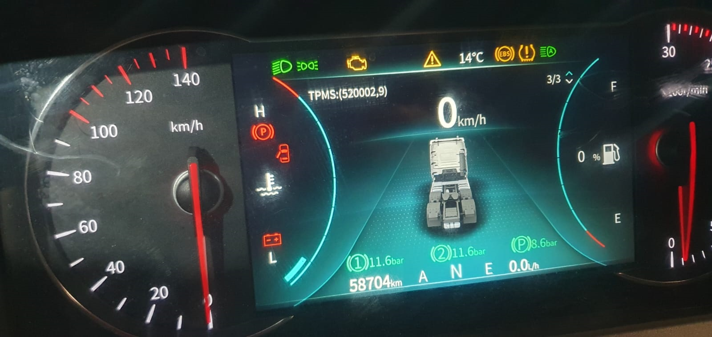
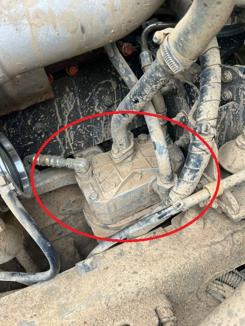
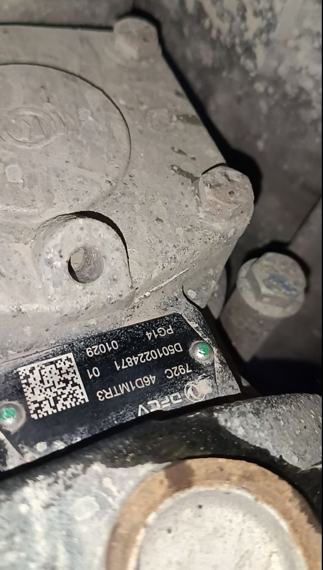
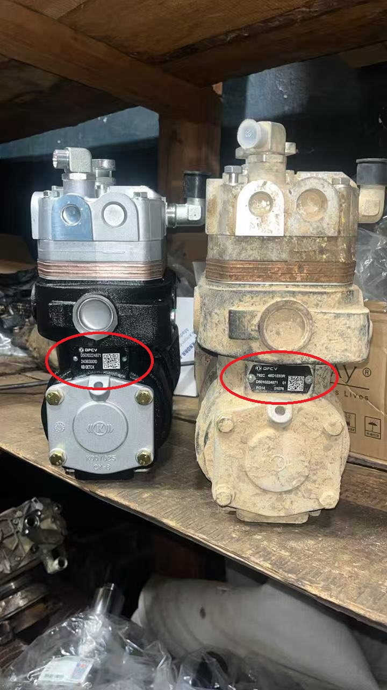
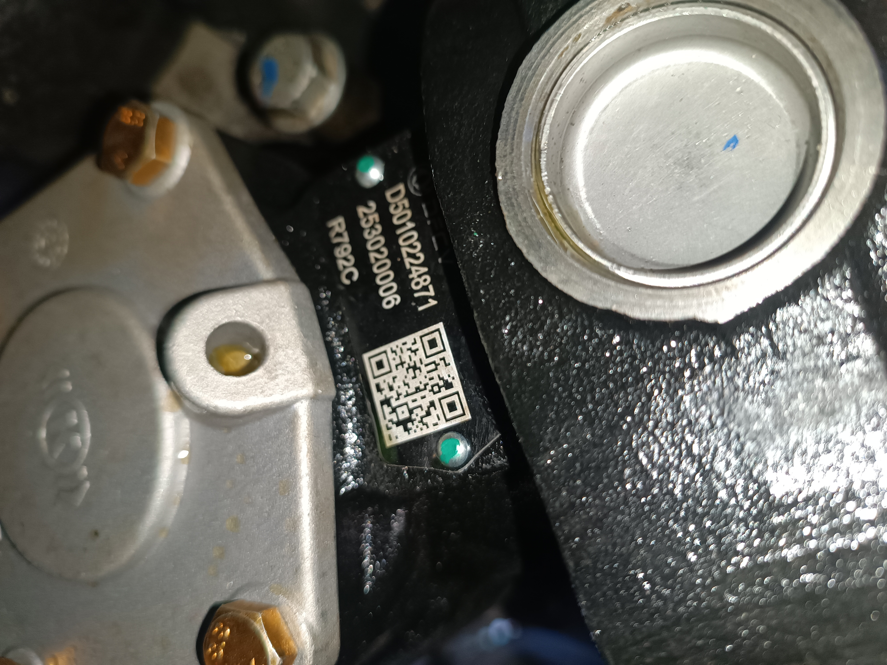
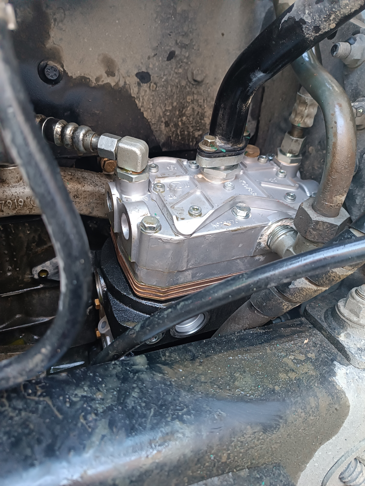
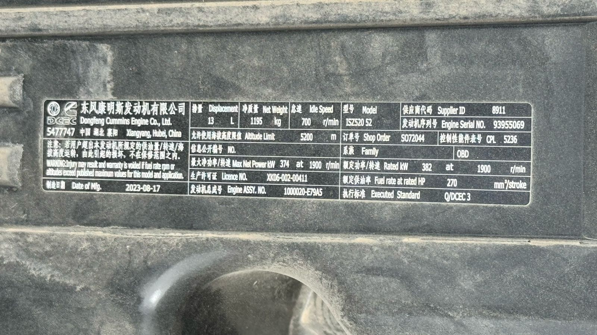

При выполнении диагностики и ремонта, в рамках гарантии, очень важно сделать определенный набор фото и видео материалов. Есть стандартный набор фотографий, который не зависит от выполняемых работ, и материалы под каждый конкретный ремонт.
Важно понимать, то что вы снимаете должно быть понятно
Китайским коллегам. Они по фото и видео, не понимая нашего языка, должны
будут увидеть неисправность и оценить необходимость замены
детали.
На что жалуется клиент, то и фиксируем. Например:
Течет масло
в районе КПП - делаем фото этой течи
Не горит ближний свет
левой фары - делаем фото машины спереди, где видно, что одна фара
горит, а другая нет.
Ошибки на приборной панели - делаем фото
приборной панели где видны ошибки или значки неисправности.
Машина не качает воздух - а вот тут уже видео, выводим на
приборную панель показания датчиков, заводим машину и показываем что
давление не накачивается.
Шипит воздух - поливаем мыльной
водой и снимаем как пузырится.
Примеры видео фиксации жалоб я
приложу отдельно.
Фото автомобиля спереди под углом 45°

Фото таблички VIN.
Внимание! Нужна именно табличка, VIN номер
на раме не заменяет табличку.

Фото приборной панели с хорошо видимым пробегом

Фото неисправной детали на автомобиле. При подаче рекламации рекомендуется отметить ее на фото.

Фото и видео материалы диагностики. Фото разборки для выяснения
причин. Копии экрана диагностического компьютера (при необходимости), и
т.д.
Правила и образцы диагностических
материалов.





Файл образа формируется в программе диагностики Cummins Insite
автоматически при считывании данных из блока ECU.
Для прекрепления
файла к рекламации его необходимо экспортировать из программы
диагностики в формате .EIF
Рекомендуется сохранять начальный(при
первичном считывании) и конечный файл образа (уже после ремонта и
стирания кодов неисправности), и оба файла прикладывать к
рекламации.